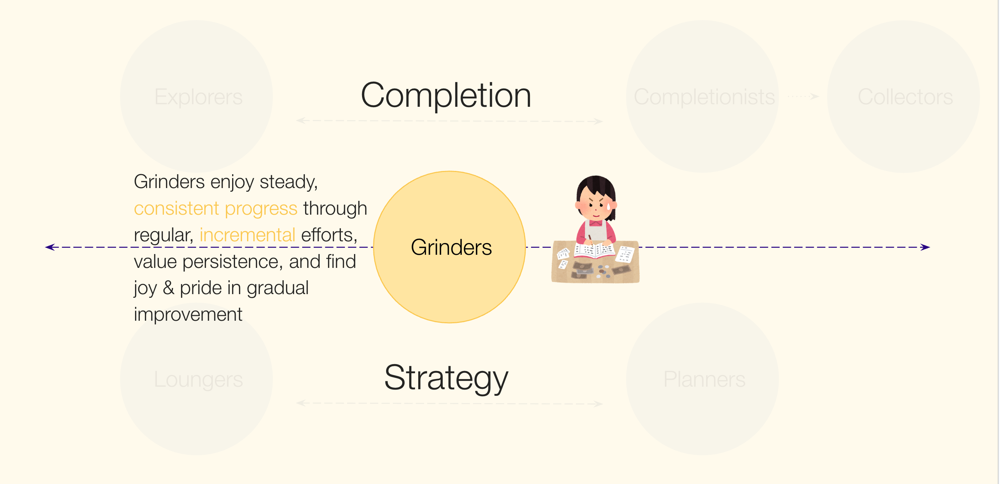

The challenge
Teams talked about “the player” as if there were one. Japan was a major, distinct market where the team had little qualitative understanding.
Case 06 · Metacore Games
Merge Mansion had analytics and survey data, but no shared language for who its players actually were. Through deep interviews with Japanese players, I built that understanding, and coached the researchers who ran them.
Teams talked about “the player” as if there were one. Japan was a major, distinct market where the team had little qualitative understanding.
Nine in-depth interviews with Japanese players, recruited across spend and tenure, synthesised into six player portraits. I designed the approach and coached new interviewers on moderation.
The six Player Portraits became a shared reference picked up across later studies, and are part of the repository tagging system. Japan got the qualitative understanding it had been missing.

Players kept describing how they play with one phrase, Kotsu Kotsu: steady, gradual progress where the effort is itself the reward.
The full story
The summary above is the skim. Each section expands for the detail.
Merge Mansion had analytics and survey data, but no shared language for who its players actually were. Teams talked about “the player” as if there were one. I set out to understand how players really engage with the game, what motivates them, what frustrates them, and what drives them to spend, through deep interviews. The lens for this study was the Japanese audience: a major, distinct market where the team had little qualitative understanding.
I led the study and authored it. My co-researchers, who are Japanese speakers, conducted the interviews, and I ran the synthesis together with two of them. Because they were new to interviewing, I also trained and coached them on how to moderate: how to probe, stay neutral, and follow a thread without leading the participant. I designed the interview approach and moderation guide, and built the conversations into the persona framework that came out of the study.
Nine in-depth, hour-long interviews with Japanese players, recruited carefully across spender and non-spender, newer and longer-tenured, at a level high enough that they had real game experience to draw on. Interviews are slow, but that's the point: they let players narrate their own experience in their own words, which is where the most revealing findings tend to come from.
The synthesis is where the value compounded. Rather than stopping at a list of likes and dislikes, I worked the nine conversations into six player portraits, each a coherent play pattern with its own motivations, frustrations, and spending behaviour: the Explorer, Progressor, Collector, Strategist, Lounger, and Grinder.
The findings that mattered most were the ones a survey would never have produced.
Players kept describing how they play using a Japanese phrase, “Kotsu Kotsu”, step-by-step, mindful, gradual progress where the long, steady effort is itself the reward. That wasn't a question I asked, it was a frame players brought themselves. It turned the Grinder persona from a generic play pattern into something culturally grounded, and gave the team a real sense of what consistent, gradual progress means to this audience.
Engaged players also voiced real anxiety about the game ending. That is a striking thing to hear: distress at the prospect of finishing a game they love. It connects to a broader cultural pattern of uncertainty avoidance, and it raised a real question for the team about long-term vision and how players are given a sense of a future in the game.
And one high-spending player described feeling that the more he spent, the more expensive the offers he was shown became, while he saw others getting cheaper ones. Whether or not the targeting actually works that way, the perception is a trust risk in a price-sensitive market, and surfacing it gave the team something concrete to look into.
Underneath these sat a clear cluster of frustrations: progression slowing sharply after the welcoming early game, events that felt too hard, too random, and too repetitive, and silent changes to game systems (item max levels shifting without warning) that cost players resources and eroded trust.
Nine interviews in one market gives you a strong foundation but not a settled answer, and I said so directly. I framed the portraits as a generative starting point to validate at scale rather than a finished segmentation, flagged where cultural framing (the uncertainty-avoidance lens) was interpretive rather than measured, and noted that a spender-heavy sample weights the spending findings.
The six Player Portraits gave the team a shared way to talk about players, and they've been picked up across a number of later studies as a common reference point. The portraits are also part of the tagging system in the research repository, so insights from different studies can be filed against the same set of players.
Beyond the framework, the study gave the Japan market a qualitative understanding it had been missing, with culturally specific, design-relevant input on content, pacing, and trust that the team could act on.